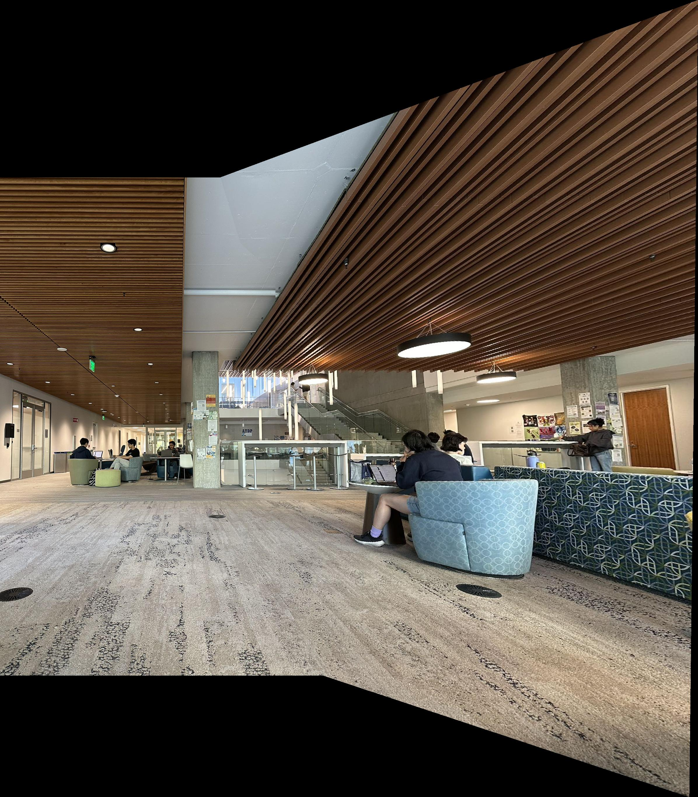

Rectification
Left: my black macbook, Right: rectified macbook
Left: bair sign, Right: rectified bair sign
Manual Mosaic
First, I warped the right image towards the center, followed by merging the left image with this central composition. As I combined the images, I expanded the canvas size. For the warping process, I initially applied forward warping to the corners of the images to map them onto a polygon in the plane of the target image. I then used the distance transform for accurate pixel mapping and executed inverse warping on this polygon to interpolate the colors from the source image.
The images follow the following format: left, right, mosaic



RANSAC for robust homography estimation
The matches identified in the prior step are generally reliable, yet some incorrect matches or outliers remain that could significantly degrade the quality of a least squares solution if computed directly from these matches. To address this issue, a randomized consensus algorithm is employed. This algorithm selects subsets of the matches, computes a homography (a least-squares solution) for them, and counts the number of matches that are "well-explained" (i.e., the L2 distance between the transformed point and the actual ground truth is small) by the homography as inliers. The homography that accumulates the highest count of inliers is selected as the correct one. Subsequently, these inliers are used to compute a final least-squares homography. The process of warping and stitching is then conducted similarly to the initial part.
For each image set, the corners after applying ANMS, correspondences are shown (first row), followed by the left, right, and Ransac mosaic outcomes (second row).
Stuffs I learned
Linear algebra is really important for computer vision and it's imporant that we study them well as researchers.